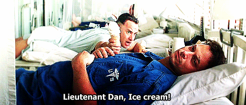
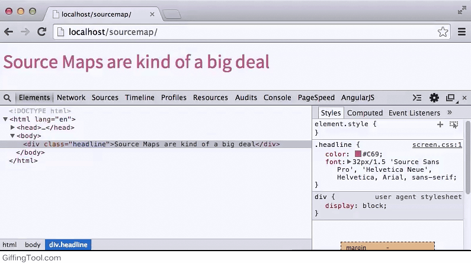
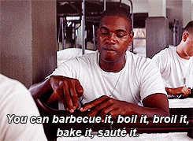

My fingers hurt...
Bracesless WordPress
A Presentation by AJ Zane (@azanebrain)
for WordCamp Orange County 2015
Are you lazy?
What I'll be covering
(how to be lazy)
1: The benefits of preprocessors
2: Getting setup (quick overview)
3: Why it makes sense with WP
resources: ow.ly/NNvIL
azanebrain.github.io/braceslesswp
Benefits of Preprocessors
Definition
trimmed down code
that will be compiled to
PHP, CSS, JS, etc
Vanilla PHP:
<?php $title = 'Bracesless WordPress'; >
<?php echo $title; ?>
Precompiled:
- title = 'Bracesless WordPress';
h1.title
= title
#content
p This is much better
| include _smiley-face.jade
Getting Setup
Task Runner (brought to you by Node)
Easy to setup
Easy to share
Free
Installing Node
brew install node
OR
nodejs.org/download
Using NPM:
npm install node-sass
Task Runners
I choose...
IDE that's right for you
Syntax Highlighting
Choose a Task Runner based on its mascot
You will switch
File organization
┬ dist/
| ├ app.js
| ├ index.php
| └ style.css
├ lib/
├ src/
| ├ app.coffee
| ├ index.jade
| ├ style.sass
├ .git
├ .gitignore
├ Gulpfile.coffee
├ package.json
└ README.md
Browser Tools
Source maps == awesome
Starter boilerplates
github.com/azanebrain/braceslesswp
What can you do with
Bracelss WordPress

But I'm a super not-lazy person
complaints
The team has to learn a new language
Precompiled syntaxes are simpler than vanilla code
The learning curve is a matter of forgetting, not learning
Setup takes too long
"I want to get a new comp and be ready in 10min"
NPM lets you do this
npm install bubba-gump-shrimpDon't sacrifice hours of dev time to get a new computer running in 10 minutes
With great power...
comes awesome super hero powers
Adds a layer of complexibility
These tools were not developed for WP theme/plugin development, so watch out
TAKEHOMES
azanebrain.github.io/bracelesswp
Go Ahead,
Ask me anything
my name is AJ Zane
I can be found @azanebrain on all things
Front End Authority | Zan Atlantean | 2pointb